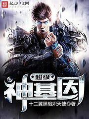
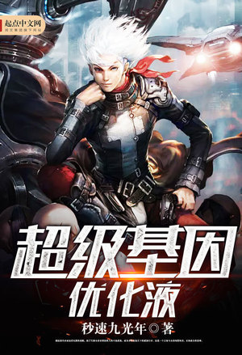

.png) BEST NOVEL I HAVE READ
BEST NOVEL I HAVE READ
BEST NOVEL I HAVE READ
BEST NOVEL I HAVE READ
HI I AM RAJVEER TALKING ABOUT MY BEST NOVEL I HAVE READ
| SUPER GENE | SWALLOWED STAR | SUPER GENO OPTIMISM FLUID |
|---|---|---|
|

Super Gene by Twelve-Winged Dark Seraphim is set in an interstellar era where mankind has developed teleport technology. However, instead of traveling to known places, they end up in a mysterious space called God's Sanctuary, filled with unknown creatures. Humans must evolve to survive and thrive in this new environment. |
Swallowed Star by I Eat Tomatoes is set in the year 2056. The story follows a teenager in a post-apocalyptic world, equipped with combat gear and weapons, as he navigates through a shattered city. The novel explores themes of survival and evolution. |

Super Gene Optimization Fluid by 9 Lightyears Per Second follows Xia Fei, who consumes a mysterious gene optimization fluid. This fluid unlocks new abilities and sets him on a journey in an intergalactic human community. |